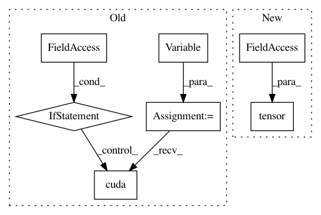

3d0c71243d9a1d2b3cd342ab21b5bbd98d48354e,pyannote/audio/embedding/approaches/triplet_loss.py,TripletLoss,process_batch,#TripletLoss#Any#,354
Before Change
if not getattr(self.model_, "batch_first", True):
X = np.rollaxis(X, 0, 2)
X = np.array(X, dtype=np.float32)
X = Variable(torch.from_numpy(X))
if self.gpu_:
X = X.cuda()
batch["X"] = X
// forward pass
fX = self.model_(batch["X"])
After Change
X = batch["X"]
if not getattr(self.model_, "batch_first", True):
X = np.rollaxis(X, 0, 2)
batch["X"] = torch.tensor(X, dtype=torch.float32, device=self.device_)
// forward pass
fX = self.model_(batch["X"])
In pattern: SUPERPATTERN
Frequency: 3
Non-data size: 7
Instances
Project Name: pyannote/pyannote-audio
Commit Name: 3d0c71243d9a1d2b3cd342ab21b5bbd98d48354e
Time: 2018-06-29
Author: bredin@limsi.fr
File Name: pyannote/audio/embedding/approaches/triplet_loss.py
Class Name: TripletLoss
Method Name: process_batch
Project Name: pyannote/pyannote-audio
Commit Name: 038cba433c519b79f8bacae85d92380afc9cc9a6
Time: 2018-06-29
Author: bredin@limsi.fr
File Name: pyannote/audio/labeling/tasks/base.py
Class Name: LabelingTask
Method Name: process_batch
Project Name: dnouri/skorch
Commit Name: d1cd97f91b0ff77362ba02b70e69e54aeecd6288
Time: 2018-05-02
Author: marian.tietz@ottogroup.com
File Name: examples/word_language_model/net.py
Class Name: Net
Method Name: repackage_hidden